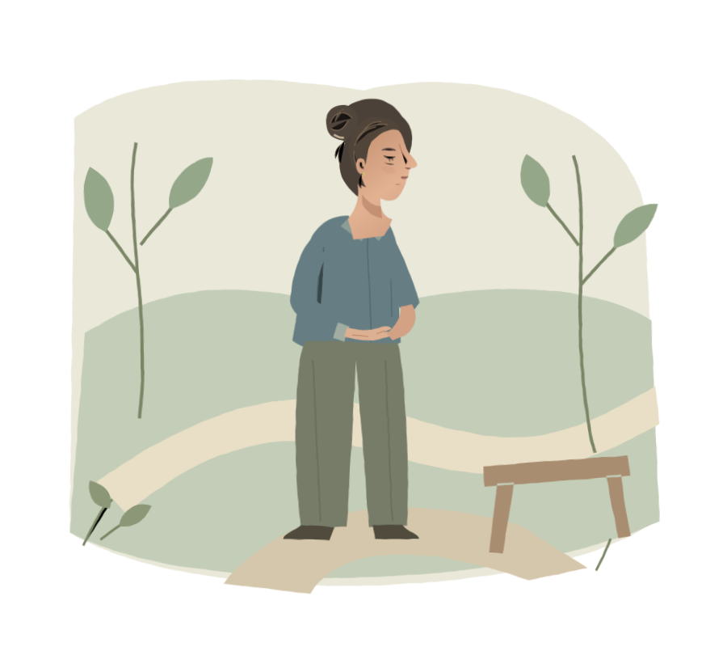
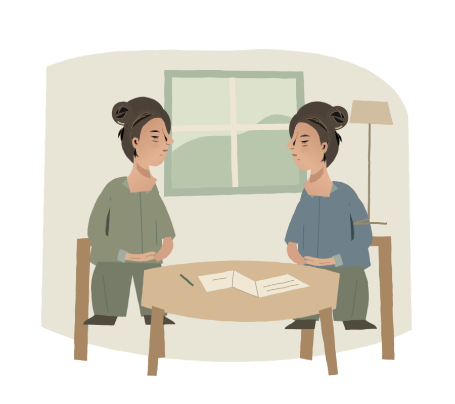

El cuerpo toma
la palabra.
Una lectura ilustrada sobre el cuerpo, las relaciones
y el cuidado que también necesitamos.
Cómo recorrer estas páginas
Lee hacia abajo, salta desde el índice o sigue los enlaces al final de cada capítulo. Abre las preguntas para explorar distintas perspectivas. No hay puntuación ni respuestas que debas compartir. Con teclado, usa Tab y Enter; las secciones desplegables también se abren con Espacio.
Para presentar: abre el guion de 10–12 minutos en otro dispositivo. Las reflexiones que abras aquí serán visibles al proyectar. No se guarda ni envía ninguna elección.
Laura es un personaje ficticio, no una paciente del libro.
Antes de
responder.
A veces, una pausa también
es parte de la respuesta.
Por fin se ha sentado. La taza aún está tibia. Quedan cosas por hacer, pero por un instante no hace ninguna.
Entonces, llega un mensaje.
«¿Puedes encargarte tú
también de esto?»
Prueba una respuesta. No hay una correcta.
Lo que invita a pensar el libro
Cuando el cuerpo dice NO, de Gabor Maté, propone mirar el espacio que dejamos a nuestras necesidades dentro de las relaciones y el cuidado.
Esta escena toma esa pregunta como punto de partida, no como diagnóstico. Decir «sí» o «no» no explica por qué alguien enferma ni determina su salud. Ninguna persona es culpable de su enfermedad.
Reflexión original, no cita del libro. El cuidado también necesita tiempo, apoyo y condiciones que lo hagan posible.
Una pausa. Tres maneras de mirar.
De Maté tomamos una invitación: mirar a la persona entera. Recorremos el intestino, la ELA y la inmunidad sin hacer de la biografía una sentencia.
Comenzar el recorrido por los capítulosCapítulo 11Una conversación
de ida y vuelta.
El intestino no está separado de nuestra vida.
Y su dolor no es imaginario.

«Todo está en su cabeza». El capítulo 11 cuestiona esa frase cuando invalida el malestar. En el resumen aportado, Maté relaciona el intestino irritable con emociones contenidas, ira que no se expresa, hiperresponsabilidad y dificultad para poner límites. Son interpretaciones del autor, no un perfil diagnóstico ni una causa única demostrada. Su pregunta amplía la mirada: ¿qué sucede en la vida de la persona, además de lo que sucede en sus órganos?
El síndrome del intestino irritable (SII) es un trastorno de la interacción cerebro-intestino. La comunicación va en ambas direcciones; no es una orden de la mente a un cuerpo que obedece.
Que una emoción importe no hace menos real un síntoma.
Sigue la conversación
Elige por dónde mirar. Puedes abrir todas las perspectivas.
Del cerebro al intestino
Las respuestas del cerebro pueden influir en la sensibilidad y el funcionamiento intestinal. El estrés puede participar, pero no es una explicación única ni significa que la persona produzca voluntariamente sus síntomas.
Del intestino al cerebro
Lo que ocurre en el aparato digestivo también puede influir en cómo nos sentimos. No se trata de elegir entre una causa «física» y una «emocional»: hay una interacción real.
Del síntoma al cuidado
Escuchar el dolor, explorar qué lo acompaña y buscar evaluación clínica pueden ir juntos. Hablar de estrés debe ampliar la atención, no sustituirla.
Un poco más: SII no significa inflamación
El SII no es lo mismo que una enfermedad inflamatoria intestinal. No se conoce una causa exacta y pueden intervenir varios factores. El dolor sigue siendo real aunque una prueba no muestre una lesión estructural evidente.
El estrés no equivale siempre a inflamación. Una lectura del libro no puede diagnosticar síntomas persistentes, nuevos o preocupantes: requieren evaluación profesional.
Para llevarnos: escuchar la experiencia y estudiar el síntoma no son caminos opuestos.
Seguir el hilo hacia el capítulo 12Capítulo 12Una persona.
No una explicación.
Acompañar es hacer lugar a una voz,
no hablar en su nombre.

ELA y la pérdida del «no». El resumen presenta el capítulo «Moriré primero desde arriba». Maté interpreta relatos de personas muy entregadas a los demás, que no se quejan y relegan sus necesidades. También explora una infancia en la que ser útil habría sido una forma de buscar amor y aceptación. Esa es la lectura del autor, no una explicación causal demostrada de la ELA.
Podemos atender a esas historias sin convertirlas en un perfil de quien enferma. La esclerosis lateral amiotrófica (ELA) afecta a las neuronas motoras, implicadas en el movimiento voluntario. No es una consecuencia demostrada de la generosidad, el carácter o los límites personales.
La pregunta no es «¿qué hizo para enfermar?», sino «¿qué necesita y qué quiere?».
Ensaya una forma de acompañar
Elige por dónde mirar. Puedes abrir todas las perspectivas.
Quiero ofrecer ayuda concreta
«Puedo acompañarte a la consulta o encargarme de una tarea. ¿Te serviría alguna de esas opciones?» Ofrecer algo posible reduce el peso de tener que organizar toda la ayuda. La persona puede aceptar, cambiar la propuesta o rechazarla.
Quiero respetar una decisión
«¿Qué prefieres que hagamos? ¿Quieres tiempo para pensarlo?» Necesitar ayuda no elimina la autonomía. Escuchar preferencias y adaptar la forma de comunicarnos es parte del cuidado.
No sé qué decir
«No tengo una explicación, pero puedo escucharte.» Acompañar no exige encontrar una lección en la enfermedad, pedir optimismo ni prometer mejoría.
Un poco más: historias, causas y cuidado
Los relatos permiten conocer experiencias; por sí solos no demuestran causalidad. La causa de la ELA suele ser desconocida; existen formas familiares y factores genéticos en algunos casos.
Aprender a decir «no» no es una prevención ni una cura demostrada. La atención especializada, el apoyo emocional y el cuidado cotidiano pueden convivir sin atribuir a las emociones poderes curativos.
Las figuras de esta página son ilustraciones, no pacientes ni retratos de casos del libro.
Para llevarnos: el apoyo puede ampliar la autonomía, no ocupar su lugar.
Seguir el hilo hacia el capítulo 13Capítulo 13Lo que protege.
Lo que significa.
Una imagen puede ayudarnos a pensar.
No tiene que explicar una enfermedad.
«Propio o no propio»: autoinmunidad y confusión biológica. El resumen conecta la ira contenida y el miedo a perder afecto con la dificultad para defender los límites personales. Maté traza un paralelo con el sistema inmunitario que se dirige contra tejidos propios. Conservamos esa imagen para reflexionar, sin confundirla con una causa biológica demostrada.
En otro plano, el sistema inmunitario protege al organismo y necesita regulación. En las enfermedades autoinmunes, la respuesta puede dirigirse contra tejidos propios. La artritis reumatoide es un ejemplo; no todas estas enfermedades son iguales.
Un límite emocional no es una frontera inmunológica.
Mira con dos lentes
La misma palabra —«protección»— puede abrir conversaciones distintas. Despliega cada lente, sin convertir una en la otra.
La lente del significado
«Necesito proteger un espacio para mí» puede nombrar una necesidad legítima. Es una imagen sobre relaciones, descanso y cuidado. No es una explicación del funcionamiento inmunitario.
La lente del mecanismo
La autoinmunidad describe procesos biológicos. En la artritis reumatoide no se conoce una causa exacta; intervienen factores como genes, ambiente y hormonas. No puede deducirse de cómo alguien expresa su ira.
Prueba la distinción: «la ira se vuelve autoataque»
Como afirmación médica, no es una conclusión que podamos sostener aquí. Una metáfora no demuestra que reprimir ira cause autoinmunidad. Podemos hablar de enfado y necesidades sin atribuirles el origen de una enfermedad.
Un poco más: conservar la pregunta humana
No hace falta descartar la vida emocional para reconocer la complejidad biológica. Podemos preguntarnos qué apoyo falta, qué duele o qué no se ha podido decir. Esas preguntas importan por sí mismas, no porque garanticen salud.
La imagen de «un cuerpo confundido» es una simplificación, no un mecanismo completo. Ni la enfermedad es un fallo moral, ni cuidarse sustituye tratamiento y seguimiento.
Para llevarnos: comprender una metáfora y conocer sus límites pueden ir juntos.
Llegar a la pausa finalTu cuerpo merece
cuidado. No culpa.
Laura sigue junto a la ventana. No sabemos nada de su salud futura. Sí podemos imaginar una tarde en la que no tenga que sostenerlo todo sola.
Elige una frase para llevarte, o sigue sin elegir. No necesitas contar nada personal.
También está bien dejar esta página sin una respuesta.
Cuidarse no debería ser
otra tarea que hacer a solas.
Las páginas detrás
de estas páginas.
Esta experiencia adapta el resumen aportado de los capítulos 11, 12 y 13 de Cuando el cuerpo dice NO, de Gabor Maté. No es una transcripción del libro completo ni incluye citas textuales verificadas del autor. Las frases de las escenas y las ilustraciones son originales.
- NIDDK · Síntomas y causas del SII (en inglés)
Interacción cerebro-intestino, causas no completamente conocidas y combinación de factores.
- MedlinePlus · Esclerosis lateral amiotrófica (en inglés)
Neuronas motoras, causas, formas familiares y factores genéticos.
- NIAMS · Artritis reumatoide (en inglés)
Autoinmunidad y factores genéticos, ambientales y hormonales.
Créditos y decisiones editoriales
Dirección e ilustraciones SVG originales creadas para esta experiencia. «La pausa» conserva el piloto aprobado; las tres composiciones nuevas prolongan su lenguaje de papel, pigmento y contorno a lápiz. No se utilizan fotografías de pacientes ni imágenes de stock.
Tipografía Literata alojada localmente. Licencia de la tipografía. El texto de interfaz usa la fuente sans del sistema. No hay analítica, formularios, cookies de la aplicación ni almacenamiento de respuestas.
Se preserva la invitación de Maté a escuchar la vida entera. Se corrigen las equivalencias entre SII e inflamación, personalidad y ELA, e ira y autoinmunidad. Laura es ficción y no se le atribuye una enfermedad.
Los enlaces médicos requieren conexión. Esta lectura educativa no sustituye una evaluación ni un tratamiento profesional.